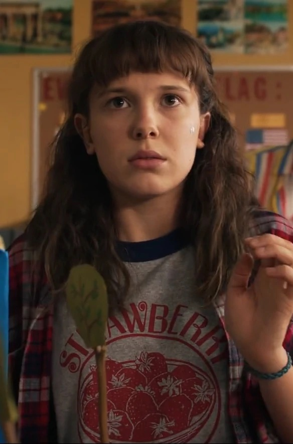
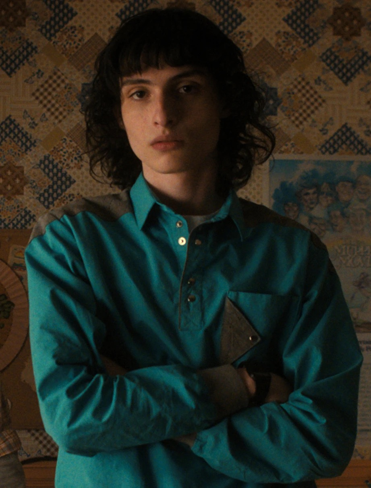
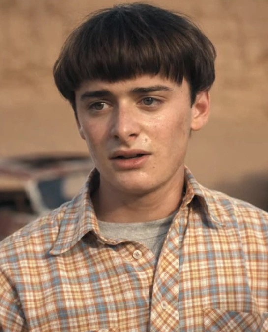
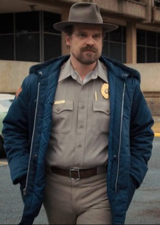

Plot
In a small town, a boy disappears, and his friends uncover a girl with powers who might help find him.
Main Characters

Eleven — a girl with powers and a secret past.She was kidnapped and raised in Hawkins National Laboratory. After escaping the lab, she was found by Mike, Lucas, and Dustin. Upon discovering her abilities, Mike believed that she could help find Will, their missing friend.

Mike Wheeler — brave and loyal friend of Eleven and the group leader.

Will Byers — the boy who disappears and sets the story in motion.

Jim Hopper — police chief involved in a mysterious case.
Seasons
- Season 1 - 8 episodes
- Season 2 - 9 episodes
- Season 3 - 8 episodes
- Season 4 - 9 episodes